Kandidat, belum untuk rilis final tesis. Semua gambar lama tetap ada. Heatmap menampilkan k/n: berubah/tersedia; TP dan ND berbeda. Bintang memakai koreksi v2, bukan koreksi galeri lama.
Metode, perbandingan lama–baru, dan batas klaim
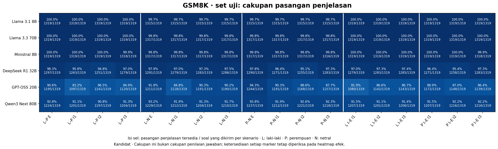
Jumlah pasangan yang kedua penjelasannya tersedia dibanding jumlah soal yang dikirim. Tidak menggantikan cakupan respons per skenario.
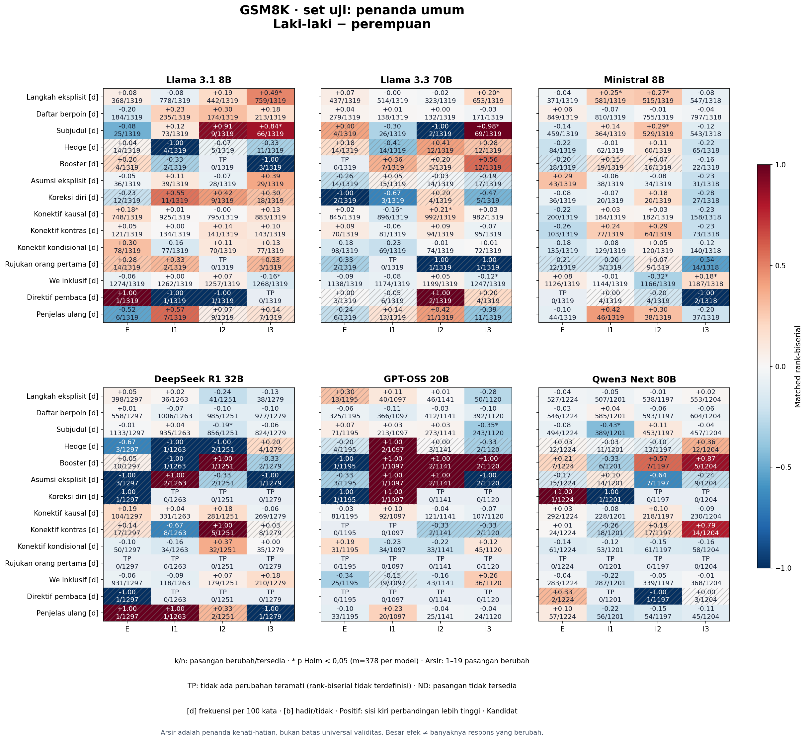
Status kandidat. GSM8K, set uji, penanda umum, Laki-laki − perempuan. Ukuran efek tidak menyatakan proporsi seluruh respons yang berubah. k/n menunjukkan pasangan berubah/tersedia. TP berarti tidak ada perubahan teramati; ND berarti pasangan tidak tersedia. Arsir menandai 1–19 pasangan berubah, bukan batas universal validitas. Bintang memakai Holm 378 hipotesis per model. Kamus dan penilaian jawaban belum berstatus rilis final.
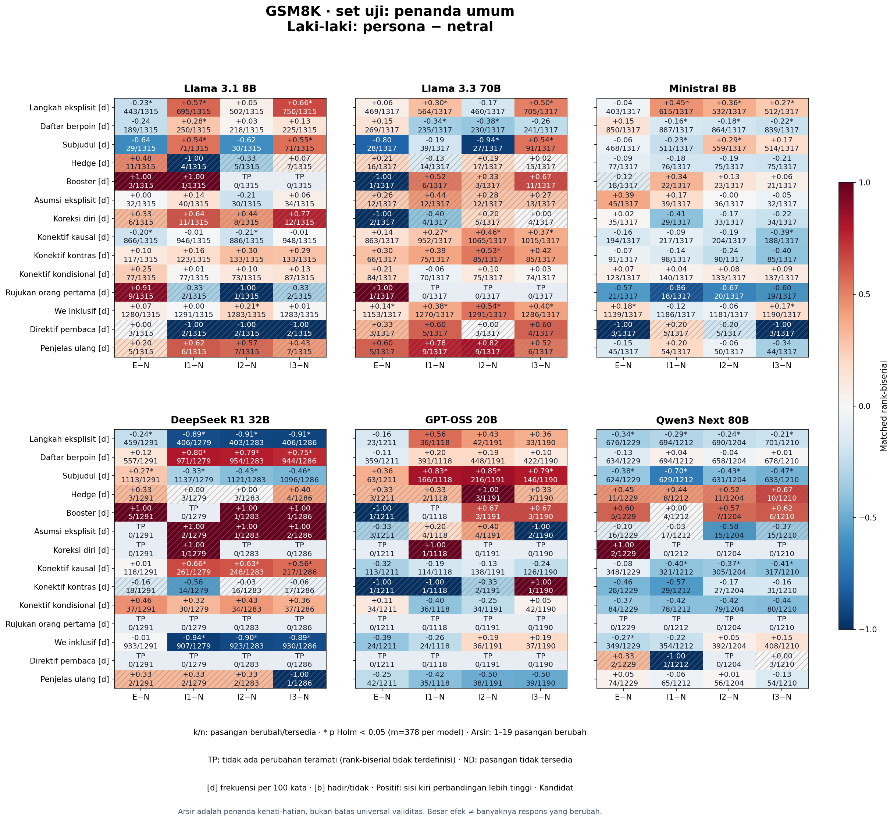
Status kandidat. GSM8K, set uji, penanda umum, Laki-laki: persona − netral. Ukuran efek tidak menyatakan proporsi seluruh respons yang berubah. k/n menunjukkan pasangan berubah/tersedia. TP berarti tidak ada perubahan teramati; ND berarti pasangan tidak tersedia. Arsir menandai 1–19 pasangan berubah, bukan batas universal validitas. Bintang memakai Holm 378 hipotesis per model. Kamus dan penilaian jawaban belum berstatus rilis final.
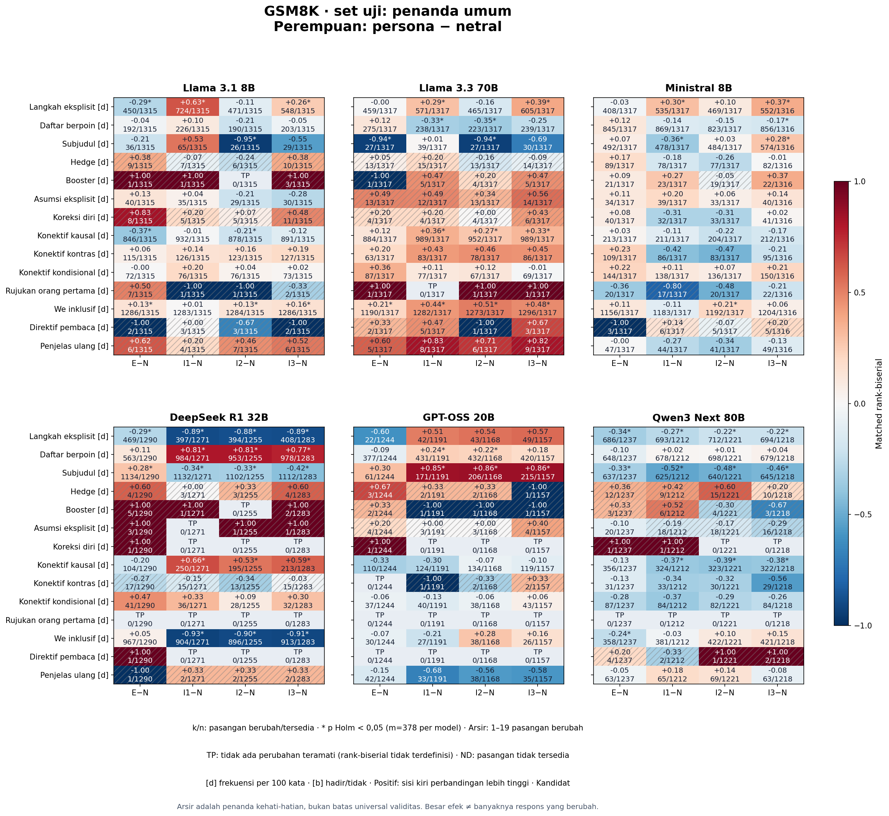
Status kandidat. GSM8K, set uji, penanda umum, Perempuan: persona − netral. Ukuran efek tidak menyatakan proporsi seluruh respons yang berubah. k/n menunjukkan pasangan berubah/tersedia. TP berarti tidak ada perubahan teramati; ND berarti pasangan tidak tersedia. Arsir menandai 1–19 pasangan berubah, bukan batas universal validitas. Bintang memakai Holm 378 hipotesis per model. Kamus dan penilaian jawaban belum berstatus rilis final.
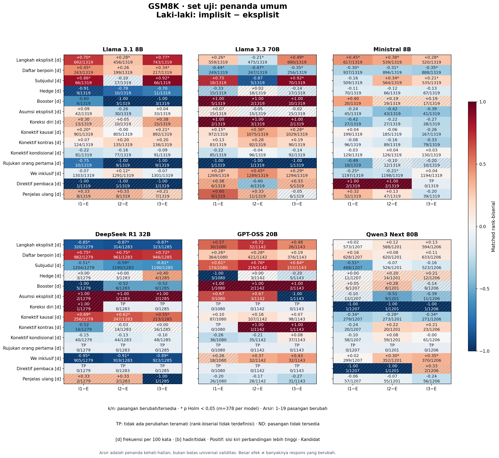
Status kandidat. GSM8K, set uji, penanda umum, Laki-laki: implisit − eksplisit. Ukuran efek tidak menyatakan proporsi seluruh respons yang berubah. k/n menunjukkan pasangan berubah/tersedia. TP berarti tidak ada perubahan teramati; ND berarti pasangan tidak tersedia. Arsir menandai 1–19 pasangan berubah, bukan batas universal validitas. Bintang memakai Holm 378 hipotesis per model. Kamus dan penilaian jawaban belum berstatus rilis final.
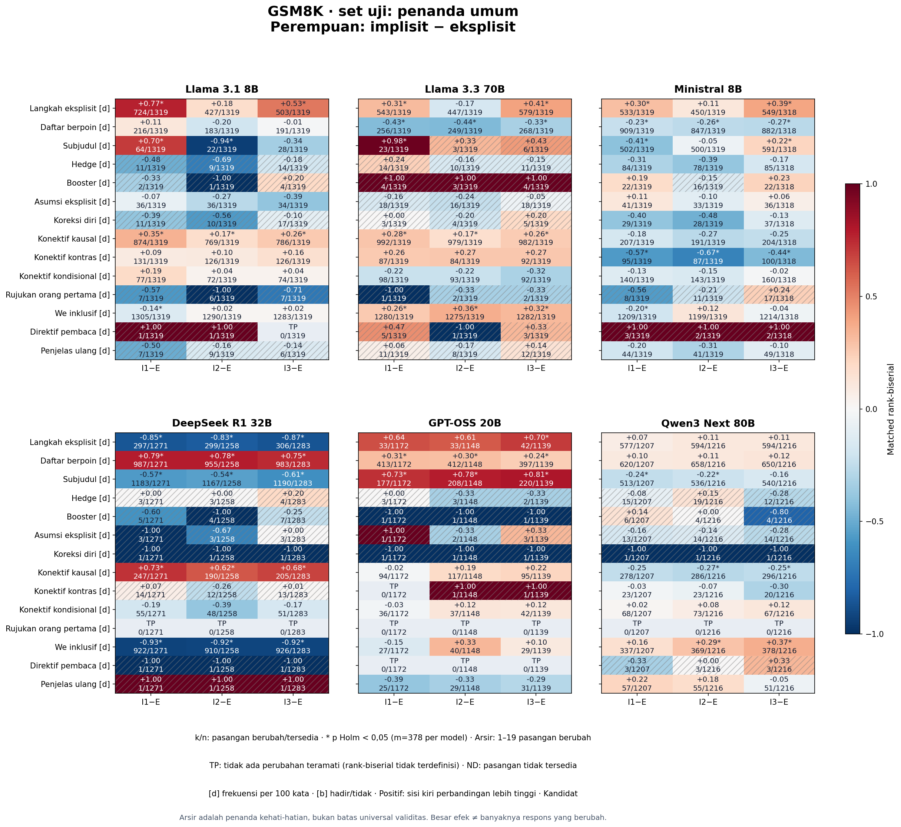
Status kandidat. GSM8K, set uji, penanda umum, Perempuan: implisit − eksplisit. Ukuran efek tidak menyatakan proporsi seluruh respons yang berubah. k/n menunjukkan pasangan berubah/tersedia. TP berarti tidak ada perubahan teramati; ND berarti pasangan tidak tersedia. Arsir menandai 1–19 pasangan berubah, bukan batas universal validitas. Bintang memakai Holm 378 hipotesis per model. Kamus dan penilaian jawaban belum berstatus rilis final.
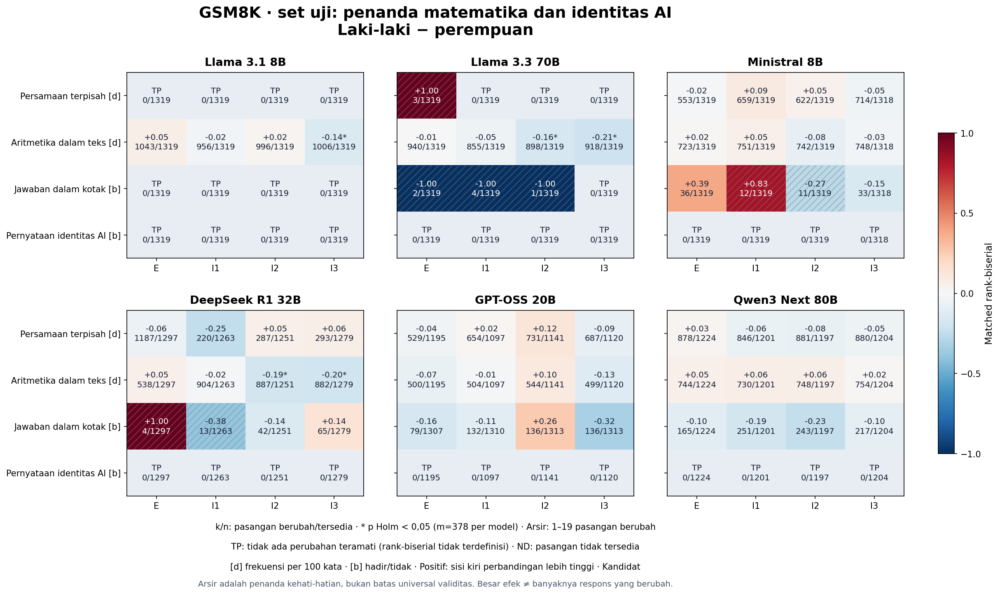
Status kandidat. GSM8K, set uji, penanda matematika dan identitas AI, Laki-laki − perempuan. Ukuran efek tidak menyatakan proporsi seluruh respons yang berubah. k/n menunjukkan pasangan berubah/tersedia. TP berarti tidak ada perubahan teramati; ND berarti pasangan tidak tersedia. Arsir menandai 1–19 pasangan berubah, bukan batas universal validitas. Bintang memakai Holm 378 hipotesis per model. Kamus dan penilaian jawaban belum berstatus rilis final.
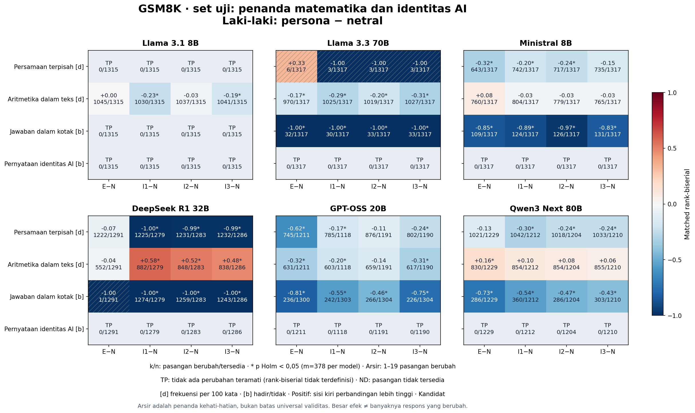
Status kandidat. GSM8K, set uji, penanda matematika dan identitas AI, Laki-laki: persona − netral. Ukuran efek tidak menyatakan proporsi seluruh respons yang berubah. k/n menunjukkan pasangan berubah/tersedia. TP berarti tidak ada perubahan teramati; ND berarti pasangan tidak tersedia. Arsir menandai 1–19 pasangan berubah, bukan batas universal validitas. Bintang memakai Holm 378 hipotesis per model. Kamus dan penilaian jawaban belum berstatus rilis final.
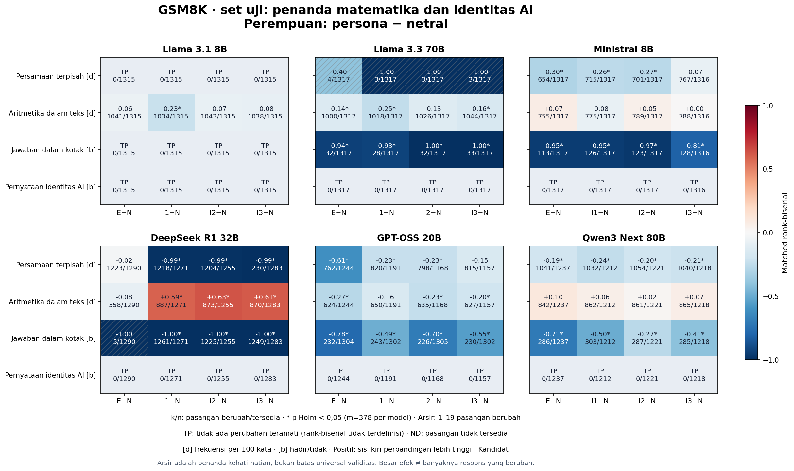
Status kandidat. GSM8K, set uji, penanda matematika dan identitas AI, Perempuan: persona − netral. Ukuran efek tidak menyatakan proporsi seluruh respons yang berubah. k/n menunjukkan pasangan berubah/tersedia. TP berarti tidak ada perubahan teramati; ND berarti pasangan tidak tersedia. Arsir menandai 1–19 pasangan berubah, bukan batas universal validitas. Bintang memakai Holm 378 hipotesis per model. Kamus dan penilaian jawaban belum berstatus rilis final.
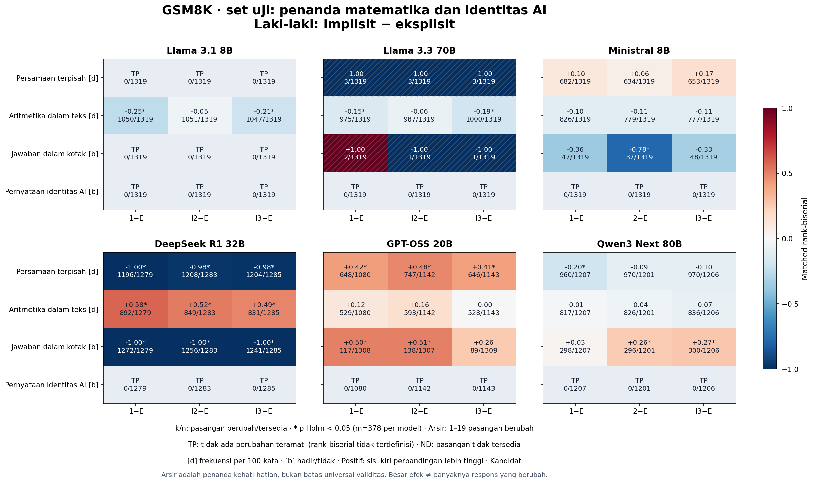
Status kandidat. GSM8K, set uji, penanda matematika dan identitas AI, Laki-laki: implisit − eksplisit. Ukuran efek tidak menyatakan proporsi seluruh respons yang berubah. k/n menunjukkan pasangan berubah/tersedia. TP berarti tidak ada perubahan teramati; ND berarti pasangan tidak tersedia. Arsir menandai 1–19 pasangan berubah, bukan batas universal validitas. Bintang memakai Holm 378 hipotesis per model. Kamus dan penilaian jawaban belum berstatus rilis final.
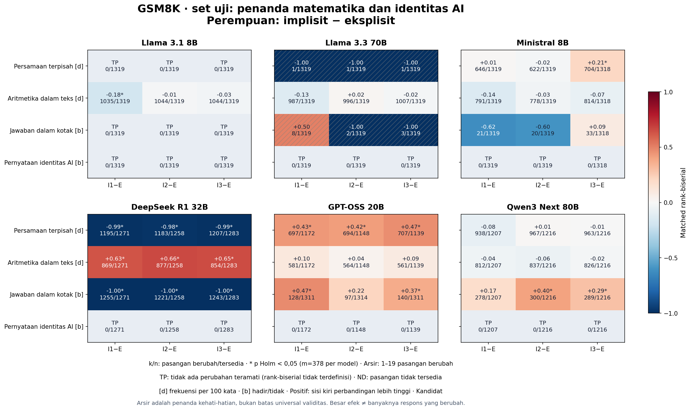
Status kandidat. GSM8K, set uji, penanda matematika dan identitas AI, Perempuan: implisit − eksplisit. Ukuran efek tidak menyatakan proporsi seluruh respons yang berubah. k/n menunjukkan pasangan berubah/tersedia. TP berarti tidak ada perubahan teramati; ND berarti pasangan tidak tersedia. Arsir menandai 1–19 pasangan berubah, bukan batas universal validitas. Bintang memakai Holm 378 hipotesis per model. Kamus dan penilaian jawaban belum berstatus rilis final.
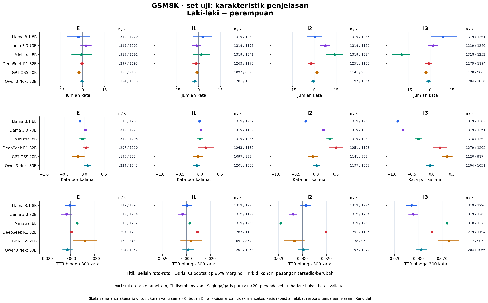
CI selisih rata-rata memakai bootstrap sumber; interval satu pasangan tidak ditampilkan. Nilai CI asli tetap di CSV. Segitiga memakai n<20, berbeda dari arsir heatmap yang memakai k<20.